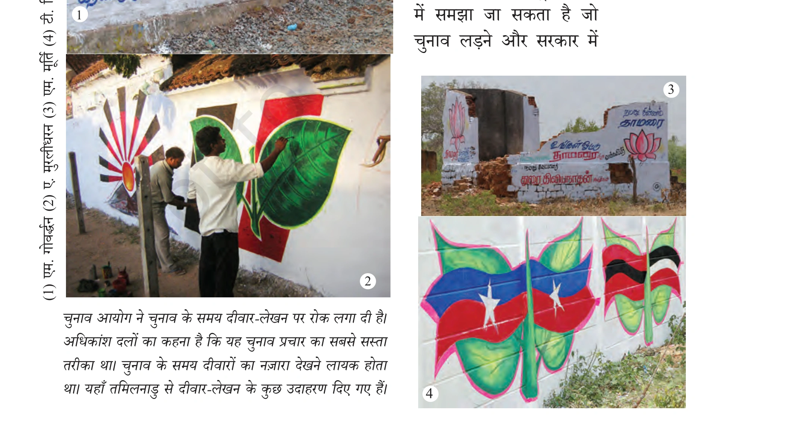
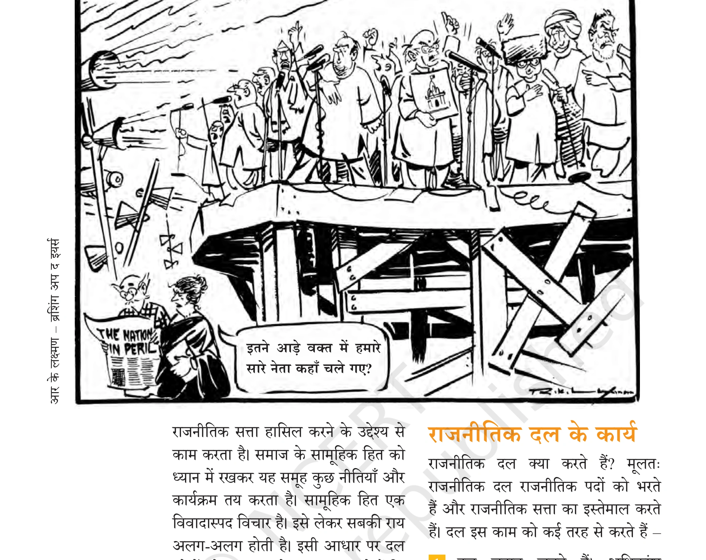
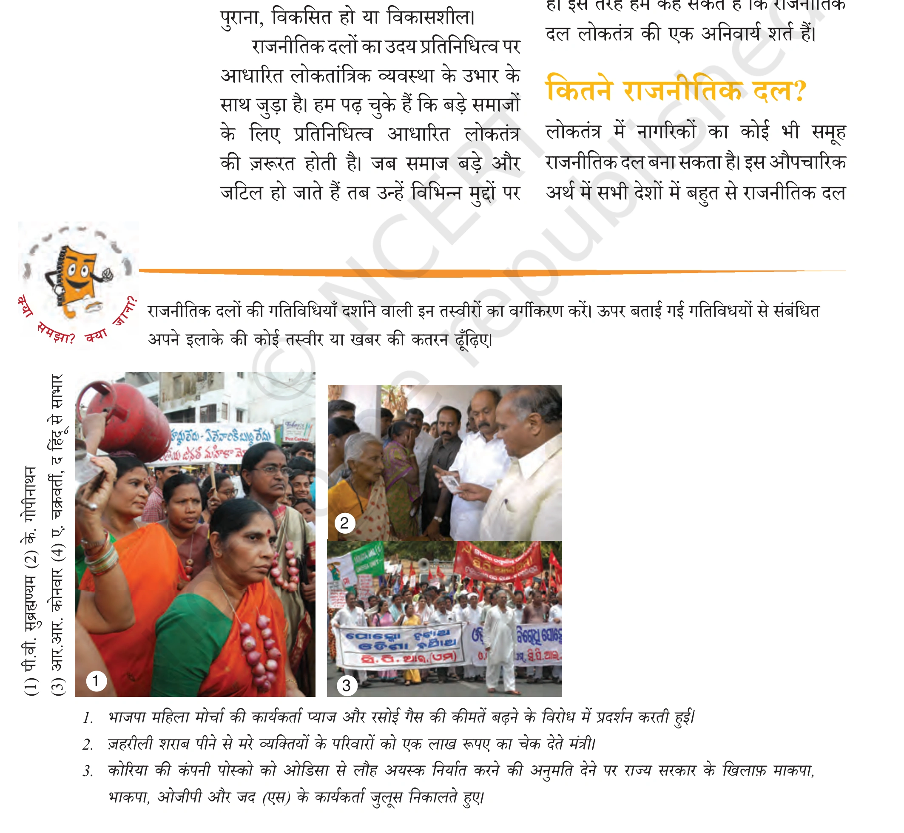
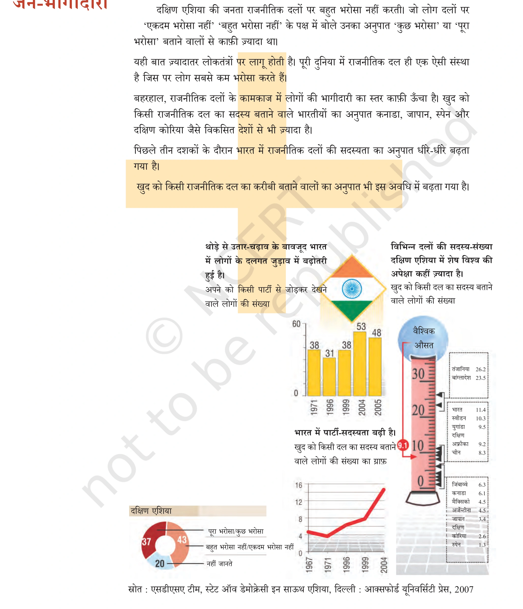
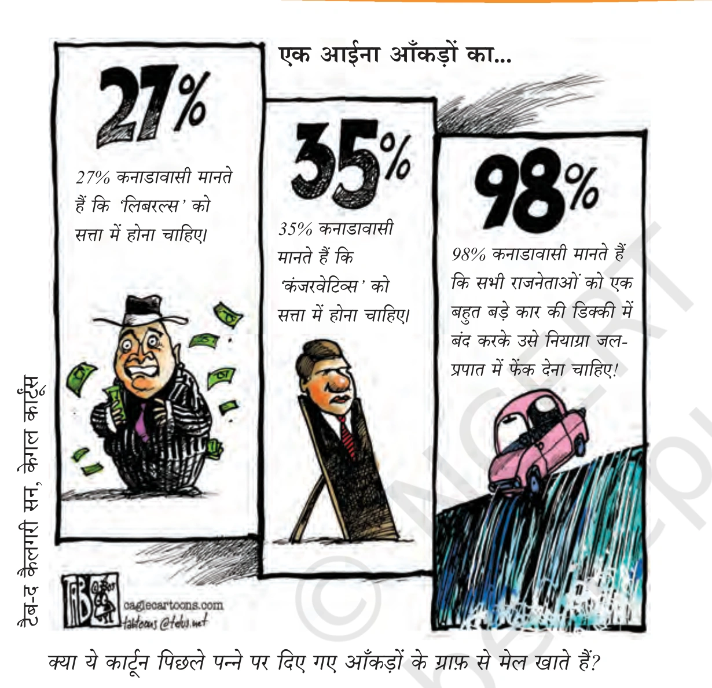
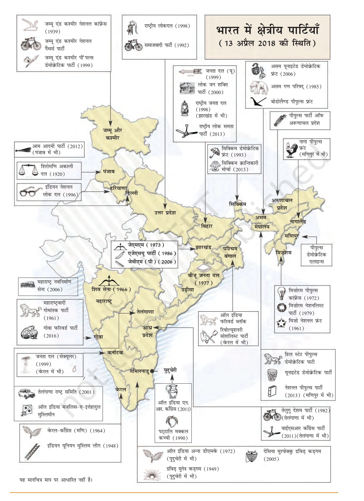
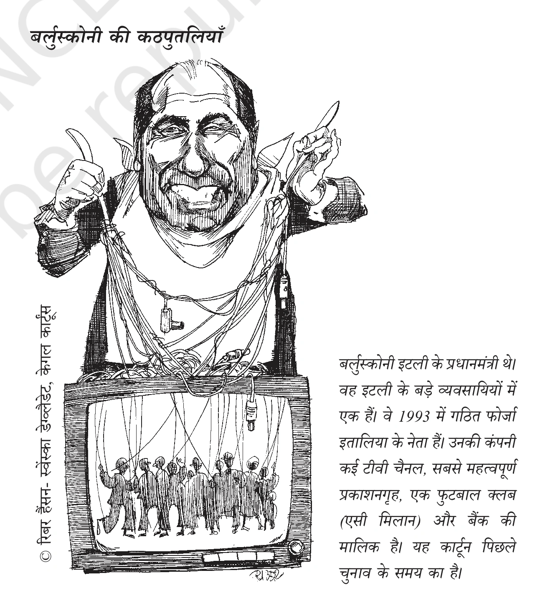
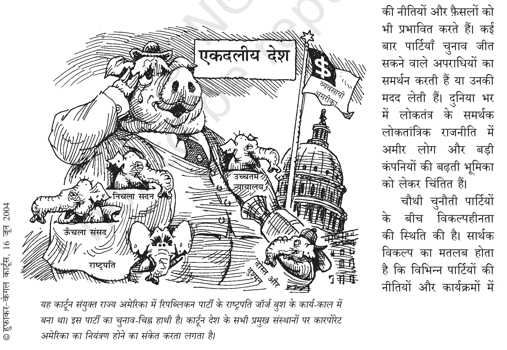
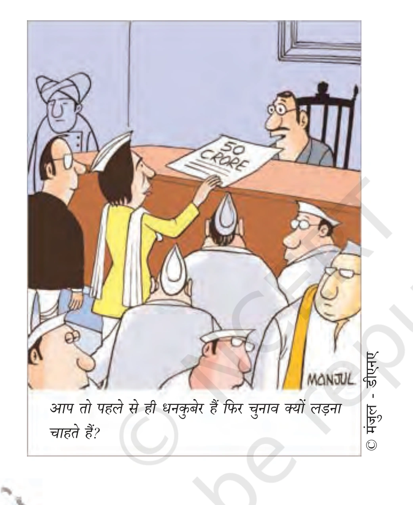
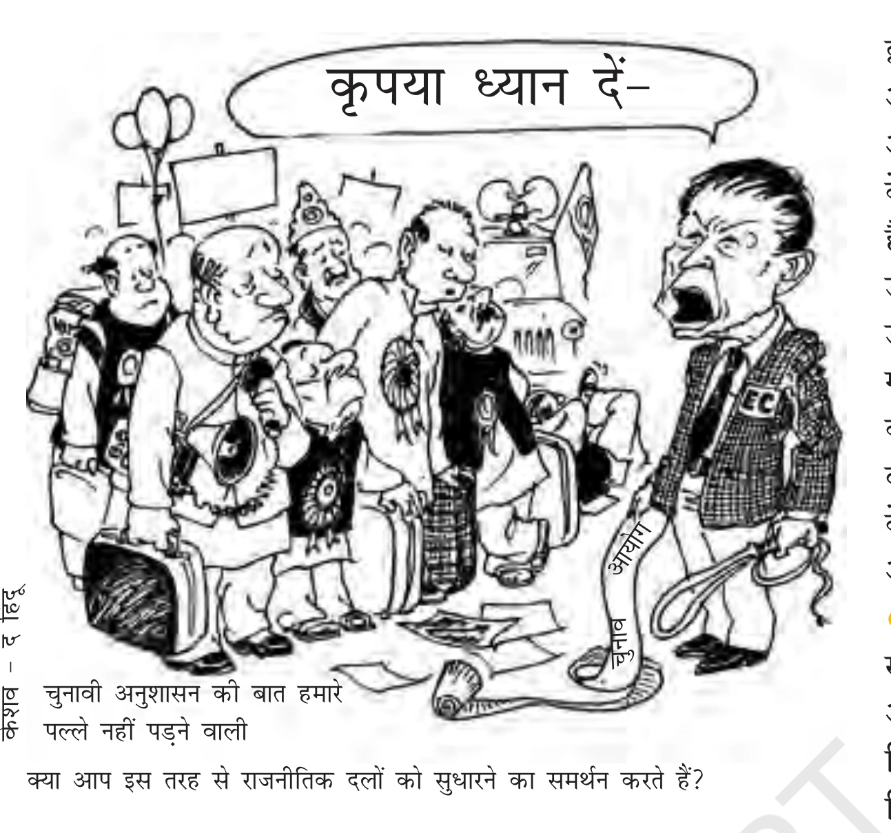

लोकतंत्र की संपूर्ण यात्रा में राजनीतिक दल सबसे अधिक दृश्यमान (दिखने वाली) संस्था हैं। आम नागरिकों के लिए लोकतंत्र का व्यावहारिक अर्थ ही राजनीतिक दल होता है। यदि आप देश के दूरदराज के ग्रामीण इलाकों में जाएं तो संभव है कि लोगों को संविधान की धाराओं या सरकार की त्रिस्तरीय संरचना के बारे में पूरी जानकारी न हो, परंतु उन्हें प्रमुख राजनीतिक दलों और उनके चुनाव चिह्नों के नाम भली-भांति ज्ञात होते हैं।


राजनीतिक दल किसे कहते हैं? राजनीतिक दल ऐसे लोगों का एक संगठित समूह है जो चुनाव लड़ने और सरकार में राजनीतिक सत्ता हासिल करने के उद्देश्य से एक साथ काम करते हैं। ये समाज के सामूहिक हित को ध्यान में रखकर कुछ नीतियां और कार्यक्रम तय करते हैं।
किसी भी राजनीतिक दल के निम्नलिखित तीन मुख्य हिस्से होते हैं:
- 1. नेता (The Leaders): जो दल का शीर्ष नेतृत्व करते हैं, नीतियां तय करते हैं और चुनाव जीतकर सरकार में मंत्री या प्रमुख पद संभालते हैं।
- 2. सक्रिय सदस्य (Active Members): जो पार्टी के कार्यक्रमों, बैठकों और चुनावी अभियानों को धरातल पर संचालित करते हैं (पार्टी की संगठनात्मक रीढ़)।
- 3. अनुयायी या समर्थक (Followers/Voters): जो दल की विचारधारा में विश्वास रखते हैं और मतदान के समय वोट देकर दल को विजयी बनाते हैं।

राजनीतिक दल लोकतंत्र में केवल चुनाव लड़ने तक सीमित नहीं हैं, बल्कि वे कानून बनाने से लेकर सरकार चलाने और जनमत तैयार करने तक 7 बुनियादी कार्य संपन्न करते हैं:


🗳️ कार्य 1: चुनाव लड़ना एवं उम्मीदवार चयन
अधिकतर लोकतांत्रिक देशों में चुनाव मुख्य रूप से राजनीतिक दलों द्वारा खड़े किए गए प्रत्याशियों के बीच लड़ा जाता है। भारत में पार्टी के शीर्ष नेता ही चुनाव हेतु उम्मीदवारों का चयन करते हैं और टिकट बांटते हैं, जबकि अमेरिका में दल के सदस्य और समर्थक स्वयं प्रत्याशी चुनते हैं।

📋 कार्य 2: नीतियां और कार्यक्रम बनाना
दल विभिन्न नीतियों और कार्यक्रमों को जनता के सामने रखते हैं और मतदाता अपनी पसंद की नीतियों का चुनाव करते हैं। समाज में लाखों नागरिकों के अलग-अलग विचार होते हैं; राजनीतिक दल उन विविध विचारों को कुछ बुनियादी दिशाओं में समेट देते हैं जिन्हें सरकार अपनी नीति बना सके।

⚖️ कार्य 3: कानून निर्माण में निर्णायक भूमिका
देश के लिए कानून बनाने में राजनीतिक दल सबसे अहम भूमिका निभाते हैं। संसद और राज्य विधानसभाओं में औपचारिक बहस के बाद कानून पास होते हैं। चूंकि अधिकांश सांसद और विधायक किसी दल के सदस्य होते हैं, इसलिए वे दल के निर्देश (व्हिप) के अनुसार ही विधेयकों पर मतदान करते हैं।

🏛️ कार्य 4: सरकार बनाना और चलाना
कार्यपालिका का गठन राजनीतिक दलों द्वारा ही किया जाता है। चुनाव में बहुमत हासिल करने वाला दल सरकार बनाता है। दल अपने नेताओं को प्रशिक्षित करता है, उन्हें मंत्री पद सौंपता है और सरकारी मंत्रालयों (गृह, वित्त, शिक्षा, रक्षा आदि) को चलाने की जिम्मेदारी देता है।

📢 कार्य 5: विपक्ष की सशक्त भूमिका
चुनाव में हारने वाले दल सत्ताधारी दल के खिलाफ 'विपक्ष' की भूमिका निभाते हैं। वे सरकार की त्रुटिपूर्ण नीतियों और विफलताओं की तीखी आलोचना करते हैं, संसद में प्रश्नकाल में सवाल पूछते हैं तथा जनता को लामबंद कर सरकार पर अंकुश लगाते हैं।

👥 कार्य 6: जनमत का निर्माण और जागरूकता
राजनीतिक दल जन-मुद्दों को उठाते हैं और उन पर समाज में व्यापक विमर्श कराते हैं। देश भर में दलों के लाखों कार्यकर्ता फैले होते हैं। दल समाज के विभिन्न वर्गों के मुद्दों पर आंदोलन, पदयात्राएं व सभाएं आयोजित कर अनुकूल जनमत तैयार करते हैं।


🤝 कार्य 7: कल्याणकारी योजनाओं एवं सरकारी मशीनरी तक पहुँच
दल आम नागरिकों को सरकारी तंत्र और जनकल्याणकारी योजनाओं (जैसे- आवास, राशन, पेंशन, नरेगा) तक आसान पहुँच प्रदान करते हैं। एक सामान्य ग्रामीण नागरिक के लिए सरकारी अधिकारी से मिलना कठिन हो सकता है, परंतु स्थानीय पार्टी कार्यकर्ता से संपर्क साधना सरल होता है। दल नागरिक और अफसर के बीच एक सेतु का कार्य करते हैं।

❓ यदि राजनीतिक दल न हों तो क्या होगा? (बिना दलों के लोकतंत्र की अराजकता)
कल्पना कीजिए कि देश में एक भी राजनीतिक दल न हो। ऐसी स्थिति में:
- 1. प्रत्येक उम्मीदवार निर्दलीय होगा: कोई भी प्रत्याशी पूरे देश के लिए बड़ी नीतिगत नीतियां बनाने या वायदे करने की स्थिति में नहीं होगा।
- 2. सरकार की उपयोगिता संदिग्ध रहेगी: चुने गए जनप्रतिनिधि केवल अपने स्थानीय क्षेत्र (वार्ड/विधानसभा) के प्रति जवाबदेह होंगे, पूरे देश को चलाने की जिम्मेदारी कोई नहीं लेगा।
- 3. जवाबदेही का पूर्ण अभाव: देश की अर्थव्यवस्था, सुरक्षा और विकास के लिए किस नेता या समूह को जिम्मेदार ठहराया जाए, यह तय करना असंभव हो जाएगा।
निष्कर्ष: बड़े और जटिल समाजों में विभिन्न विचारों को समेटने, सरकार पर अंकुश लगाने और एक प्रतिनिधि सरकार चलाने के लिए राजनीतिक दलों की मौजूदगी अनिवार्य शर्त है।

दुनिया भर के लोकतांत्रिक देशों में राजनीतिक दलों की संख्या अलग-अलग होती है। संविधान और समाज की विविधता के आधार पर दलीय व्यवस्था को 3 प्रमुख श्रेणियों में बांटा जाता है:
| मॉडल का नाम | मुख्य विशेषताएं एवं कार्यप्रणाली | प्रमुख उदाहरण देश |
|---|---|---|
| 1. एकदलीय व्यवस्था (One-Party System) | केवल एक ही दल को सरकार बनाने और चलाने की अनुमति होती है। यह एक अलोकतांत्रिक विकल्प है क्योंकि मतदाताओं के पास कोई वास्तविक विकल्प नहीं होता। | चीन (कम्युनिस्ट पार्टी) |
| 2. द्विदलीय व्यवस्था (Two-Party System) | मुख्य रूप से दो ही दलों के बीच सत्ता का फेरबदल होता है। सरकार में स्पष्ट बहुमत और राजनीतिक स्थिरता बनी रहती है। | अमेरिका (डेमोक्रेटिक & रिपब्लिकन) तथा ब्रिटेन (कंजर्वेटिव & लेबर) |
| 3. बहुदलीय व्यवस्था (Multi-Party System) | दो से अधिक राजनीतिक दल सत्ता में आने की होड़ में होते हैं। सामाजिक, भाषाई व क्षेत्रीय विविधता को पर्याप्त प्रतिनिधित्व मिलता है। | भारत (750+ पंजीकृत दल) |


🌐 गठबंधन सरकार (Coalition) एवं चुनावी मोर्चे (Fronts)
जब बहुदलीय व्यवस्था में किसी एक दल को संसद में स्पष्ट बहुमत नहीं मिलता, तो कई समान विचारधारा वाले दल मिलकर गठबंधन सरकार बनाते हैं। जब चुनाव से पहले ही कई दल औपचारिक समझौता करते हैं, तो उसे मोर्चा (Front / Alliance) कहा जाता है।
भारत में 2004 के लोकसभा चुनाव में तीन प्रमुख गठबंधन/मोर्चे उभरे:
- 1. एनडीए (NDA): राष्ट्रीय जनतांत्रिक गठबंधन (भाजपा के नेतृत्व में)
- 2. यूपीए (UPA): संयुक्त प्रगतिशील गठबंधन (कांग्रेस के नेतृत्व में)
- 3. वाम मोर्चा (Left Front): वामपंथी कम्युनिस्ट पार्टियों का समूह
साझा न्यूनतम कार्यक्रम (Common Minimum Programme - CMP): गठबंधन सरकार को सुचारु रूप से चलाने के लिए सभी सहयोगी दल एक न्यूनतम साझा नीतिगत एजेंडा तैयार करते हैं।

अकसर यह माना जाता है कि आम जनता राजनीतिक दलों से निराश है और उन पर कम विश्वास करती है। परंतु दक्षिण एशिया में हुए व्यापक वैज्ञानिक सर्वेक्षणों ने चौंकाने वाले तथ्य उजागर किए हैं:


भारत निर्वाचन आयोग (Election Commission of India - ECI) में देश भर के 750 से अधिक दल पंजीकृत हैं। चुनाव आयोग सभी दलों को समान मानता है, परंतु बड़े और स्थापित दलों को कुछ विशेष सुविधाएं प्रदान करता है जैसे- आरक्षित चुनाव चिह्न। ऐसे दलों को मान्यता प्राप्त दल कहा जाता है।


🏛️ भारत के 6 प्रमुख राष्ट्रीय राजनीतिक दल (संक्षिप्त परिचय)
- 1. भारतीय जनता पार्टी (BJP): 1980 में श्यामा प्रसाद मुखर्जी द्वारा 1951 में स्थापित भारतीय जनसंघ को पुनर्जीवित कर बनी। विचारधारा: सांस्कृतिक राष्ट्रवाद (हिंदुत्व), अंत्योदय, समान नागरिक संहिता तथा जम्मू-कश्मीर का पूर्ण एकीकरण। चुनाव चिह्न: कमल का फूल।
- 2. इंडियन नेशनल कांग्रेस (INC): 1885 में स्थापित, विश्व के सबसे पुराने दलों में से एक। विचारधारा: मध्यमार्गी (मध्यम पंथ), धर्मनिरपेक्षता, कमजोर वर्गों व अल्पसंख्यकों का कल्याण तथा नई आर्थिक नीतियां। चुनाव चिह्न: हाथ का पंजा।
- 3. बहुजन समाज पार्टी (BSP): 1984 में कांशीराम के नेतृत्व में गठित। विचारधारा: दलितों, आदिवासियों, अन्य पिछड़ा वर्ग (OBC) और धार्मिक अल्पसंख्यकों (बहुजन समाज) के सम्मान और सत्ता में भागीदारी की पैरोकार। चुनाव चिह्न: हाथी।
- 4. कम्युनिस्ट पार्टी ऑफ इंडिया - मार्क्सवादी (CPI-M): 1964 में स्थापित। विचारधारा: मार्क्सवाद-लेनिनवाद, समाजवाद, धर्मनिरपेक्षता व साम्राज्यवाद का विरोध। पश्चिम बंगाल, केरल और त्रिपुरा में मजबूत जनाधार। चुनाव चिह्न: हँसिया, हथौड़ा और सितारा।
- 5. आम आदमी पार्टी (AAP): 2012 में अन्ना आंदोलन की पृष्ठभूमि में गठित। विचारधारा: पारदर्शी सुशासन, भ्रष्टाचार विरोध, सस्ती बिजली, उत्कृष्ट सरकारी स्कूल और स्वास्थ्य (मोहल्ला क्लीनिक)। चुनाव चिह्न: झाड़ू।
- 6. नेशनल पीपुल्स पार्टी (NPP): 2013 में पी. ए. संगमा द्वारा गठित, पूर्वोत्तर भारत का पहला राष्ट्रीय दल। मेघालय, मणिपुर व नगालैंड में सक्रिय। चुनाव चिह्न: किताब (पुस्तक)।
🌾 क्षेत्रीय दलों का उभार एवं भारतीय संघवाद का सशक्तीकरण
पिछले तीन दशकों (1990 के बाद) में भारत में क्षेत्रीय दलों की संख्या, ताकत और जनाधार में भारी वृद्धि हुई है। 1996 से 2014 तक किसी भी एक राष्ट्रीय दल को लोकसभा में अपने दम पर स्पष्ट बहुमत नहीं मिला था।
परिणामस्वरूप, प्रत्येक राष्ट्रीय दल को गठबंधन बनाने के लिए क्षेत्रीय दलों का सहारा लेना पड़ा। इसने भारतीय संसद को अधिक समावेशी और प्रतिनिधिमूलक बनाया तथा केंद्र-राज्य संबंधों में सहकारी संघवाद (Cooperative Federalism) को मजबूती प्रदान की।


चूंकि राजनीतिक दल लोकतंत्र का सबसे दृश्यमान चेहरा हैं, इसलिए आम जनता लोकतंत्र की प्रत्येक विफलता और कमी के लिए राजनीतिक दलों को ही दोषी मानती है। एनसीईआरटी के अनुसार, राजनीतिक दलों को 4 प्रमुख चुनौतियों का सामना करना पड़ रहा है:
⚠️ चुनौती 1: आंतरिक लोकतंत्र का अभाव (Lack of Internal Democracy)
दलों में निर्णय लेने की सारी शक्ति कुछ शीर्ष नेताओं के हाथों में केंद्रित हो जाती है। मुख्य समस्याएं:
- दलों के पास अपने सदस्यों की कोई खुली और अद्यतन सदस्यता सूची नहीं होती।
- नियमित सांगठनिक चुनाव नहीं कराए जाते; शीर्ष पद मनोनयन से भरे जाते हैं।
- सामान्य कार्यकर्ताओं को पार्टी के अंदर लिए जाने वाले निर्णयों की कोई पूर्व सूचना नहीं होती।
- जो नेता शीर्ष नेतृत्व से असहमति जताते हैं, उन्हें पार्टी से बाहर का रास्ता दिखा दिया जाता है।


⚠️ चुनौती 2: वंशवाद की राजनीति (Dynastic Succession / Dynasty Trap)
चूंकि दलों में पारदर्शी और लोकतांत्रिक आंतरिक चुनाव नहीं होते, इसलिए शीर्ष पदों पर बैठे नेता अपने ही परिवार के सदस्यों, रिश्तेदारों और करीबियों को आगे बढ़ाते हैं। नुकसान:
- अनुभवहीन, अलोकप्रिय और अयोग्य रिश्तेदार केवल पारिवारिक उपनाम के बल पर शीर्ष नेतृत्व पर काबिज हो जाते हैं।
- दलों में दशकों से जमीन पर पसीना बहाने वाले निष्ठावान व योग्य कार्यकर्ताओं का लोकतांत्रिक हक छिन जाता है।
- यह प्रवृत्ति विश्व के अनेक लोकतंत्रों (भारत, दक्षिण एशिया तथा अन्य देशों) के लिए एक गंभीर रोग बन चुकी है।

⚠️ चुनौती 3: धन और बाहुबल का प्रभाव (Money and Muscle Power)
हर हाल में चुनाव जीतने की अंधी दौड़ में राजनीतिक दल अनैतिक रास्तों का सहारा लेते हैं। गंभीर खतरे:
- दल केवल उन्हीं प्रत्याशियों को टिकट देते हैं जो चुनाव में करोड़ों रुपये पानी की तरह बहा सकें।
- बड़ी-बड़ी कंपनियां और अमीर उद्योगपति राजनीतिक दलों को गुप्त या खुला चंदा देकर सरकार बनने के बाद अपने हितैषी कानून और नीतियां बनवाते हैं।
- कई दल चुनाव जीतने की संभावना देखकर आपराधिक छवि वाले बाहुबलियों और माफियाओं को टिकट दे देते हैं।



⚠️ चुनौती 4: सार्थक विकल्प की कमी (Lack of Meaningful Choice)
मतदाताओं के सामने आज सबसे बड़ी विडंबना यह है कि विभिन्न दलों के बीच नीतियों और कार्यक्रमों में कोई बड़ा वैचारिक अंतर नहीं बचा है। समस्या:
- सभी प्रमुख राजनीतिक दल लगभग एक जैसी नव-उदारवादी आर्थिक नीतियां, मुफ्त योजनाएं और घोषणाएं पेश करते हैं।
- मतदाता असमंजस में रहता है कि वह किस दल को चुने, क्योंकि किसी की सरकार बने नीतियां नहीं बदलतीं।
- यहाँ तक कि नेता भी बार-बार दल बदलते रहते हैं, जिससे एक ही चेहरा हर चुनाव में अलग-अलग झंडों के साथ दिखता है।


इन 4 गंभीर चुनौतियों से उबरने के लिए भारत में संविधान, न्यायपालिका और निर्वाचन आयोग द्वारा कई महत्वपूर्ण कानूनी कदम उठाए गए हैं, तथा सुधार हेतु कई नए सुझाव भी चर्चा में हैं:
⚖️ 1. हाल में किए गए संवैधानिक व कानूनी सुधार
- 1. दल-बदल विरोधी कानून (Anti-Defection Law): विधायकों और सांसदों को चुनाव जीतने के बाद मंत्री पद या धन के लालच में दल बदलने से रोकने हेतु संविधान में 52वें संशोधन (1985) और बाद में 91वें संशोधन द्वारा कानून बनाया गया। अब यदि कोई सांसद या विधायक अपनी पार्टी छोड़ता है तो उसकी सदन की सदस्यता तुरंत समाप्त हो जाती है।
- 2. संपत्ति और आपराधिक रिकॉर्ड का शपथपत्र (Affidavit): सर्वोच्च न्यायालय के ऐतिहासिक आदेशानुसार चुनाव लड़ने वाले प्रत्येक उम्मीदवार को नामांकन के साथ एक कानूनी हलफनामा देना अनिवार्य है जिसमें उसकी संपत्ति, देनदारियों और उसके विरुद्ध लंबित आपराधिक मुकदमों का पूरा विवरण होता है।
- 3. अनिवार्य सांगठनिक चुनाव व आयकर ऑडिट: निर्वाचन आयोग ने एक आदेश पारित कर सभी पंजीकृत राजनीतिक दलों के लिए नियमित आंतरिक संगठनात्मक चुनाव कराना और अपने आय-व्यय का आयकर रिटर्न (ITR) दाखिल करना अनिवार्य कर दिया है।


💡 2. राजनीतिक दलों के सुधार हेतु प्रमुख भावी सुझाव
- 1. दलों के आंतरिक कामकाज का कानूनी नियमन: दलों के लिए एक अनिवार्य कानून बनाया जाए जिसके तहत वे अपने सदस्यों का खुला रजिस्टर रखें, अपने संविधान का पालन करें और आंतरिक विवादों के निपटारे हेतु एक स्वतंत्र पंच बनाएं।
- 2. महिला आरक्षण (कम से कम 33% टिकट): राजनीतिक दलों के लिए यह कानूनी रूप से अनिवार्य किया जाए कि वे चुनाव में कम से कम एक-तिहाई (33%) टिकट महिला उम्मीदवारों को दें तथा पार्टी की निर्णय लेने वाली समितियों में भी महिलाओं की भागीदारी सुनिश्चित हो।
- 3. चुनावों का सरकारी खर्च (State Funding of Elections): चुनाव प्रचार का खर्च सरकार को उठाना चाहिए। सरकार मान्यता प्राप्त दलों को चुनाव लड़ने हेतु पेट्रोल, कागज, मीडिया समय या पिछले चुनाव में मिले वोटों के अनुपात में वित्तीय अनुदान दे, ताकि अमीर उद्योगपतियों का दबदबा समाप्त हो सके।

👥 3. आम नागरिकों, आंदोलनों और मीडिया की निर्णायक भूमिका
केवल कानून बना देने से राजनीतिक दलों में वास्तविक सुधार नहीं हो सकता, क्योंकि कानून बनाने वाले सांसद स्वयं दलों के नेता होते हैं और वे ऐसा कोई कानून पास नहीं करेंगे जो उनकी अपनी शक्ति पर अंकुश लगाए। अतः सुधार के दो अन्य जीवंत मार्ग हैं:
- 1. जनता का संगठित दबाव: आम नागरिक, मीडिया, दबाव समूह और जन-आंदोलन याचिकाओं, जन-बहसों और शांतिपूर्ण प्रचार के जरिए दलों पर सुधार का भारी दबाव बना सकते हैं। जब दलों को लगेगा कि सुधार न करने से उनका वोट बैंक खिसक जाएगा, तो वे स्वयं सुधरने को बाध्य होंगे।
- 2. राजनीति में स्वयं सक्रिय भागीदारी: केवल बाहर बैठकर राजनीति और नेताओं की बुराई करने से व्यवस्था नहीं सुधरेगी। जो नागरिक व्यवस्था में सुधार चाहते हैं, उन्हें स्वयं राजनीतिक दलों में शामिल होना चाहिए। "खराब राजनीति का एकमात्र स्थायी समाधान है- अधिक राजनीति और बेहतर राजनीति!"


- राजनीतिक दल के 3 अंग: नेता, सक्रिय सदस्य, अनुयायी/समर्थक।
- 7 प्रमुख कार्य: चुनाव लड़ना, नीतियां बनाना, कानून निर्माण, सरकार चलाना, विपक्ष की भूमिका, जनमत निर्माण, कल्याणकारी योजनाओं तक पहुँच।
- दलीय प्रणालियां: एकदलीय (चीन), द्विदलीय (अमेरिका, ब्रिटेन), बहुदलीय (भारत)।
- राज्यस्तरीय दल की शर्त: राज्य विधानसभा चुनाव में कुल वैध मतों का 6% वोट + कम से कम 2 सीटें।
- राष्ट्रीय दल की शर्त: लोकसभा चुनाव या 4 राज्यों में 6% वोट + लोकसभा में कम से कम 4 सीटें।
- 4 प्रमुख चुनौतियां: ① आंतरिक लोकतंत्र का अभाव, ② वंशवाद की राजनीति, ③ धनबल व बाहुबल, ④ सार्थक विकल्प की कमी।
- प्रमुख कानूनी सुधार: दल-बदल विरोधी कानून (52वां संशोधन), शपथपत्र (हलफनामा) अनिवार्य, सांगठनिक चुनाव व आयकर ऑडिट।
- सुधार का मूल मंत्र: खराब राजनीति का समाधान है अधिक राजनीति और बेहतर राजनीति!